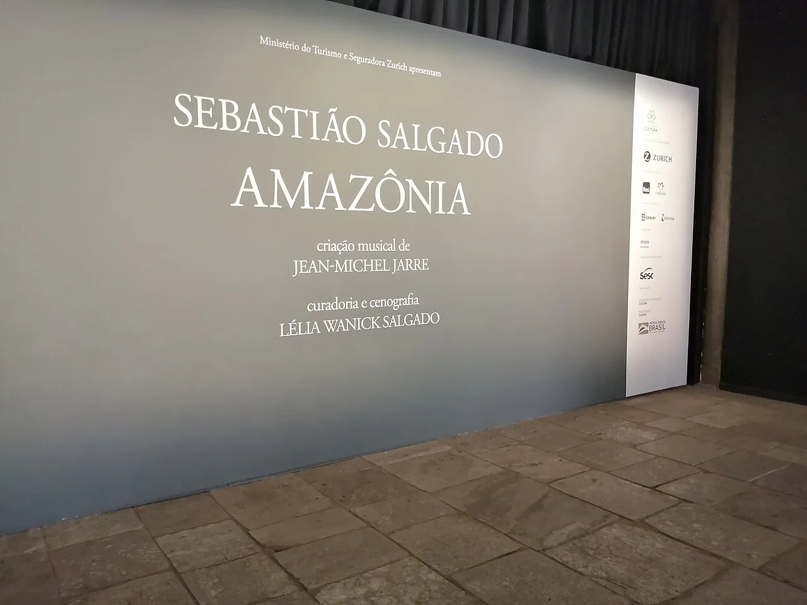
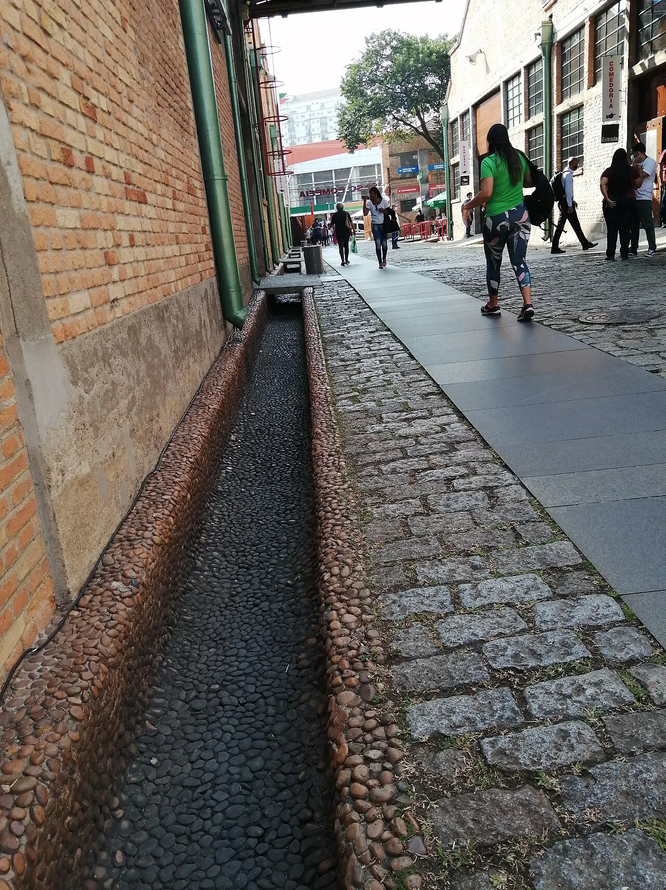

La calle interior del SESC Pompeia conserva un pavimento de adoquines junto a los muros de ladrillo. En la fotografía de 2022, las personas y el pasaje ayudan a comprender el conjunto antes que cualquier plano: hay edificios a ambos lados y espacio para atravesarlos. La memoria publicada por el SESC describe esa vía como una prolongación de la Rua Clélia. El proyecto convierte la circulación en algo más que el trayecto necesario para llegar a una actividad. [1]
El SESC compró la antigua fábrica en 1973. La intervención de Lina Bo Bardi preservó sus galpones; la primera etapa abrió en 1982 y el bloque deportivo, en 1986. La secuencia importa: el centro no surgió de un único gesto que sustituyera todo lo anterior. Reutilizar y construir fueron decisiones diferentes dentro de una misma operación. La fábrica ofrecía una estructura espacial aprovechable; las necesidades deportivas exigían otra respuesta. [1]
En un galpón, la repetición de apoyos y la amplitud del espacio permiten reconocer un orden sin que cada uso necesite un recinto completamente independiente. Esa condición resulta interesante para un centro cultural porque admite proximidades: pasar junto a una exposición, detenerse y continuar. Pero la planta abierta también exige decisiones sobre ruido, mobiliario, iluminación y circulación. La flexibilidad tiene que resolverse en esas interferencias; nombrarla no basta.


Conservar una fábrica no obliga a convertirla en un monumento al trabajo industrial. Aquí interesa el desplazamiento de finalidad: un lugar organizado para producir recibe actividades vinculadas al tiempo libre. El cambio permite preguntar cuánto de la disciplina de una institución cultural sigue tratando al visitante como alguien que debe completar una tarea. Llegar, consumir una actividad y marcharse puede ser eficiente. También puede dejar poco espacio para una presencia sin programa.
La arquitectura participa en esa diferencia cuando ofrece un recorrido comprensible y permite detenerse sin bloquearlo. Un pasaje necesita mantener continuidad entre sus extremos; una zona de estancia requiere cierta separación respecto del flujo. Si ambos funcionan, atravesar y quedarse dejan de competir por cada metro. Esta es una pregunta de proyecto verificable en planos y en uso, no una virtud que pueda darse por demostrada con la palabra convivencia.
La historia de la obra publicada por el SESC destaca el trabajo del equipo en un despacho instalado en el propio lugar, en contacto con ingenieros y trabajadores. Ese dato desplaza parte de la atención desde la figura de la arquitecta hacia la forma de desarrollar el proyecto. Adaptar una construcción exige conocer lo que aparece al intervenirla y ajustar decisiones. La presencia durante la obra no demuestra por sí sola que todas fueran acertadas; sí permite reconocer que el edificio existente actuó como información de trabajo. [2]
La imagen de una exposición de Sebastião Salgado, tomada en 2022, muestra además una transformación que el ladrillo no explica: hay selección de contenido, montaje, señalización y una institución que los organiza. Un edificio disponible no produce automáticamente una vida cultural. Hace falta decidir qué sucede, durante cuánto tiempo, con qué recursos y para quién. El mérito arquitectónico se vuelve más legible cuando no se le atribuyen también todas las tareas de esa operación.


Este límite es especialmente útil para las ciudades que buscan una nueva centralidad cultural mediante una obra visible. Reutilizar puede ahorrar ciertas intervenciones y conservar relaciones urbanas, pero no es una garantía económica ni ambiental sin evaluar estructura, instalaciones y mantenimiento. Tampoco garantiza apertura social. El alcance real depende de condiciones de entrada, reglas de permanencia y programación que deben comprobarse por separado.
La experiencia visual del Pompeia propone algo más preciso que celebrar un contraste entre ladrillo antiguo y hormigón nuevo. Permite leer una institución mediante sus conexiones: el pasaje une, los galpones alojan, otras piezas resuelven necesidades específicas. Cada parte puede tener presencia sin intentar ser la protagonista de todo. Esa distribución del carácter es una decisión de diseño que también sirve para una publicación, una escuela o una biblioteca.
La pregunta que conviene llevarse no es cómo reproducir la apariencia del SESC. Es qué espacios de una ciudad permiten llegar sin disponer todavía de un plan completo. Para responder habría que observar recorridos, estancias y condiciones de acceso. El proyecto de Bo Bardi ofrece un punto de partida concreto: la entrada a la cultura puede comenzar en el espacio entre los edificios, antes de elegir una actividad.
Fuentes.
- SESC São Paulo — 25 anos do Sesc Pompeia, 2007
- SESC São Paulo — 30 anos do Sesc Pompeia contados em exposição e livro, 2013
Lectura de la documentación histórica del SESC y de fotografías de 2022. Sin visita ni comprobación de horarios, tarifas o condiciones actuales de acceso.
Fuentes consultadas el 15.11.2026. Análisis e interpretación: RUMMOR. Edición privada para revisión.